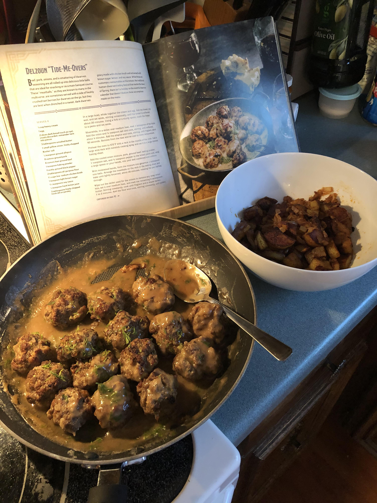

Beef, pork, onions, and a smattering of dwarven seasoning are all rolled up into delicious little balls that are ideal for snacking or as a main banquet course. These "meatballs", as they are known to many in the multiverse, are sometimes served with a side of freshly crushed tart berries for dwarves on the go, but they are best when drenched in a sweet, dark dwarven gravy made with chicken broth and enlivened with brown sugar, lemon, and soy sauce. While these are customary consumables at Hornmoot, the traditional human-dwarven trading festival that marks the dawn of Spring, there isn't a holiday on the eventful dwarven calendar that doesn't feature these scrumptious meats on the menu.
- 1/4 cup heavy cream
- 1 egg
- 2 slices dark bread (such as rye), crusts discarded, remainder torn into pieces
- 3 tablespoons unsalted butter
- 1 small yellow onion, finely chopped
- Kosher salt
- 1/4 teaspoon ground allspice
- 8 ounces ground pork
- 8 ounces lean ground beef
- 1 teaspoon baking powder
- Freshly ground black pepper
- 2 tablespoons all-purpose flour
- 1 1/3 cups low-sodium chicken broth
- 1 teaspoon light brown sugar
- 1 1/2 teaspoons soy sauce
- 1/2 teaspoon fresh lemon juice
- 3 tablespoons finely chopped fresh dill or parsley
- In a large bowl, whisk together the cream and egg. Add the bread, mix well, and set aside, stirring occasionally, until the bread is softened, about 20 minutes. Using a fork or a sturdy spoon, mash the bread to a paste and set aside.
- Meanwhile, in a skillet over medium heat, melt 1 tablespoon of the butter. Add the onion and 1/2 teaspoon salt and cook, stirring, until softened, about 4 minutes. Add the allspice and cook, stirring until fragrant, about 40 seconds. Remove from the heat and let cool to room temperature.
- Preheat the oven to 475 degrees F with a rack in the middle of the oven. Coat a large wire rack with nonstick cooking spray and set it in a large rimmed baking sheet.
- Add the cooled onion mixture, pork , ground beef, baking powder, 1 teaspoon salt, and 1/2 teaspoon pepper to the bread paste and, using a large spoon or your hands, mix until well combined and uniform.
- With moistened hands, form the mixture into generous 1-tablespoon-size balls. Arrange the meatballs on the rack in the baking sheet and bake until lightly browned, about 20 minutes, rotating the pan halfway through.
- Wipe out the skillet used for the onions to remove any stray onion bits, set it over medium heat, and melt the remaining 2 tablespoons butter. Stirring constantly, cook until fragrant and a shade darker, 1 to 2 minutes. Add the flour and cook, stirring constantly, until golden, 2 to 3 minutes. Switch to a whisk and, whisking constantly, gradually add the broth. Continuing to whisk often, cook for about 2 minutes. Add the brown sugar, soy sauce, lemon juice, and 1/4 teaspoon pepper and continue to whisk and cook until thickened, about 2 minutes more.
- Add the meatballs to the sauce and simmer, stirring occasionally, until heated through, about 4 minutes. Stir in most of the dill and taste and adjust the seasoning with additional salt and pepper, if necessary. Transfer to a serving dish, sprinkle with the remaining dill, and serve hot.
The sauce will thicken quickly as it cools. You can loosen the consistency by whisking in extra chicken broth or water, about 1 tablespoon at a time, until you have achieved the desired texture.